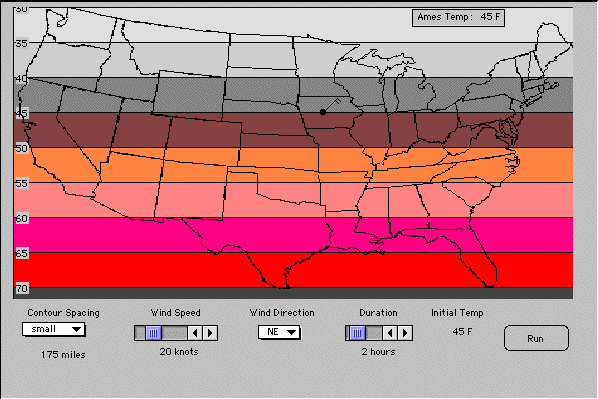
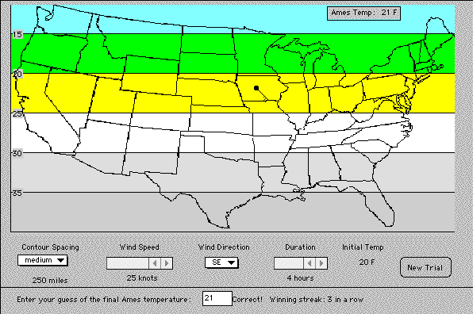
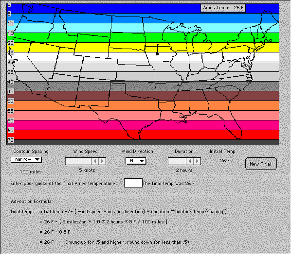

AdvectionSim Simulation
Introduction
The origins of this simulation involved the desire to convert a standard introductory meteorology lecture course into one where constructivism was the main instructional model and students were expected to take a more active role in their own learning-all without reduction of class size. The course goals were expanded to include learning how to learn science as well as learning science content. One of the major tools used to accomplish this was the use of World Wide Web server software that manages Internet class activities. ClassNet, (Van Gorp and Boysen, 1997), was developed to accomplish this task (http://classnet.cc.iastate.edu/). This tool allowed every student to be an active participant in learning activities with easy access to course materials, enhanced communication with the instructor and other students, rapid feedback concerning assignment and exam scores, and ready access to their private records of course performance.
Course materials have been designed for introductory science courses at the secondary and college level. They are intended to be supplemental to the course, allowing the instructor to decide which materials to use and which to omit. Experience with these materials has shown that their effect, especially the effect of the simulations is gradual and sufficient time must be allowed to observe a difference in student behavior and attitude. At Iowa State University students often find the simulations to be uncomfortable at first because they use them before they hear the corresponding lectures, but this approach is deliberate and is intended to create questions in students' minds so they will come to class seeking answers.
It is recommended that part of class time be allotted to the use of Small Group Activities. These allow students the opportunity to break away from the passive mode utilized in most large-scale classes and become more active learners. These activities have been well received by students. They often end up sitting in about the same place in the auditorium for every class meeting and usually look forward to interacting with the people who sit near them week after week. Various collaborative activities are used to draw each student into the construction of hypotheses for explaining observed scientific phenomena or processes. Lectures are then used to provide explanations when students have explored, tested and questioned various factors that relate to central course concepts.
Materials development for the new learning environment did not rely on traditional instructional development models. The new materials could not be designed to simply teach the course content when the goal was to encourage the learner to explore, conjecture and test ideas. The chosen solution was to develop problem-based simulations that pose scenarios and provide tools with which learners can explore, and that accurately reflect the results of specific learner's actions. The materials have served to set the stage for further learning by revealing misconceptions, raising questions, activating relevant existing knowledge, and alerting the learner to the structure and utility of the material to be learned.
Description of AdvectionSim Simulation
Advection is the process by which a property of the atmosphere is transferred by the wind. When masses of air with warmer or colder temperatures replace air at a particular location, local temperatures will change to reflect this occurrence. The advection activity simulates temperature change by transport of warm and cold air masses by horizontal winds. Advection affects are important considerations when forecasting temperature change. This advection activity was constructed to aid students in learning how to predict temperature changes resulting from advection in a learning-by-doing format. This activity was originally developed to support a forecast exercise (Yarger et al., 2000) where users are required to determine whether or not advection will have a significant influence on temperature. Significance was defined by a temperature change of at least 1-degree Fahrenheit over a two-hour period.
Temperature advection is the change in temperature over time that results from the horizontal displacement of mass by the wind. The goal of this activity is to help students develop skills for determining how to quantify this quantity using data found on surface weather maps. The straightforward way is to compute it, however, there are several factors influencing this change and many students taking meteorology to meet a science requirement have minimal mathematics skill. Thus, several versions of AdvectionSim are provided to help students develop intuitive methods for estimating the rate of change of temperature resulting from advection. More advanced versions are discussed that encourage users to compute advection changes.
Each activity simulates warm or cold air advection in the United States and allows users to select a from a range of temperature gradients and then observe how different wind speeds and directions affect the change in temperature in the vicinity of Ames, Iowa. The results show how the temperature would change during a selected time period for a particular wind speed and direction.
Instructional Goals
The first version (applet) of AdvectionSim is shown in Figure 1. The slide bars are all under user control but the activity is passive in that the advection process in merely observed. Here the goal is to have the user experiment with the various factors that influence temperature change resulting from advection and observe the resulting temperature change. Students are expected to find that winds that blow from cold to warm result in temperature drops and winds from warm to cold give warmer conditions. They should also observe that not all winds result in temperature change. Because this version lets the user vary all the parameters it enables the user to vary only one at a time to see how different parameters affect the result.
In the second version (Figure 2) the user is allowed to select both the contour spacing and the wind direction and then guess the final temperature. The wind speed is always 25 knots and the duration of the event is always 4 hours. To help make this activity more challenging a score is kept that tells the user the number of successful correct guesses in a row. The instructional goal is to encourage users to test their skill for estimating temperature change until they can repeatedly predict the correct answer. An objective might be for students to get five predictions in a row before they are considered adequately proficient. This version engages the student more than version one since it requires that they make a prediction and then gives them feedback concerning the correct answer.

Figure 1 First version of AdvectionSim
The third version is similar to the second version but is more complicated in that all four variables are randomly selected. The user is still asked to predict the new temperature and the total number of correct answers in a row are also provided. The instructional goal is similar to that for the second version, to have the user demonstrate proficiency in predicting the influence of advection on temperature change by successfully predicting the correct temperature a predetermined number of times in a row. Another objective is to motivate the user to learn how to calculate this quantity since guessing is reasonably difficult when all four determining factors can change.

Figure 2 Second version of AdvectionSim
The forth version can be skipped since it is the same as the third without the guessing. The fifth version is the same as the forth but now shows the formula. Because the program randomly selects all of the variables it is difficult to determine the correct final temperature without doing the calculations. However, now the formula is provided so that guessing is no longer necessary. The sixth version (Figure 3) also shows the formula but now the user may control each of the variables and enter the final temperature to see how many predictions they can make in a row. After a few trials they should become proficient enough so that determining the new temperature is no longer a challenge.

Figure 3 Sixth version of AdvectionSim
How to compute temperature advection
To compute advection, use the formula below. You will need to supply the values in the parentheses. Note that for our purposes, 1 knot (a nautical mile per hour) is approximately equal to 1 mile per hour. To be precise one knot is equal to 1.15 miles per hour.
Temperature change = (wind speed miles/hour)*(direction factor)*(temperature gradient degrees/mile)*(duration in hours)
Use the following when determining the direction factor:
If angle between the wind barb and the contour is - use a Direction Factor of:
90 degrees - 1
45 degrees - 0.7
0 degrees - 0
Suggested Thought Questions for Class or Group Discussion
References
Van Gorp, M., and P. Boysen, 1997: ClassNet: Managing the virtual classroom. International Journal of Educational Telecommunications, (3/2), 279-292.
Yarger, D.N., W. Gallus, Jr., M. Taber, J. P. Boysen, and P. Castleberry, 2000: A forecasting activity for a large introductory meteorology course. BAMS, 80:1:31-39.